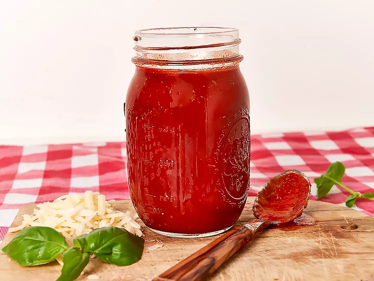

< back
Easy No-Cook Pizza Sauce

Description
With this easy no-cook pizza sauce, you can make fresh, delicious homemade pizza. This also makes a great dipping sauce.
Ingredients
- 1 (28 ounce) can unsalted crushed tomatoes
- 1/4 cup tomato paste
- 2 teaspoons sugar
- 1 teaspoon salt
- 2 tablespoons fresh torn basil leaves, or 1 teaspoon dried
- 1 teaspoon dried oregano
- 1/2 teaspoon freshly ground black pepper
- 1 clove garlic, finely minced
- 1 tablespoon extra-virgin olive oil
Steps
- Combine tomatoes, tomato paste, sugar, salt, basil, oregano, black pepper, garlic, and olive oil in a bowl; stir until well blended.
- Add to pizza as desired or store in refrigerator in an airtight container until ready to use, up to 10 days.